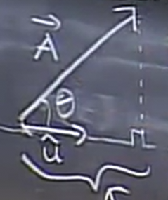
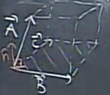

Vectors
Table of Contents
1. Vectors
Vectors are values that have both a direction and a magnitude (or length).
The image above shows a vector drawn in 3D space. The arrow denotes its direction, while the length of the arrow is the magnitude. Notice that we put an arrow above the letter in order to remind us that it's a vector. In certain typeset books, vectors will also be typeset as bold letters.
We can "decompose" a vector down into its unit vectors:
\[ \vec{A} = a_1\hat{i} + a_2\hat{j} + a_3\hat{k} = \langle a_1,a_2,a_3 \rangle \]
The unit vectors here, shown as \(\hat{i}\), \(\hat{j}\), and \(\hat{k}\), are usually meant to denote the directions of the x-axis, the y-axis, and the z-axis. In this way, we can express any vector in terms of its components.
The length of a vector, otherwise known as the magnitude, is denoted with "absolute value symbols", and the direction is denoted by \(\text{dir}(\vec{A})\).
Vectors are invariant under translation: it doesn't matter where it starts and ends, the only that matters is its length (magnitude) and its direction.
To find the magnitude of a vector given in component form, we can use the following result derived from the Pythagorean Theorem:
\[ \|\vec{A}\| = \sqrt{a_1^2 + a_2^2 + a_3^3} \]
2. Vector Operations
2.1. Vector Addition
Vectors can be added both geometrically and numerically. Starting with the geometric version, to add two vectors \(\vec{A}\) and \(\vec{B}\), we can use the "tip-to-tail" method or the parallelogram method shown below:
To numerically add two vectors, simply add the values of their components:
\[ \langle a_1,a_2,a_3 \rangle + \langle b_1,b_2,b_3 \rangle = \langle a_1+b_1,a_2+b_2,a_3+b_3 \rangle \]
2.2. Multiplying by a Scalar
Geometrically, multiplying by a scalar simply scales the length of the vector, like so:
Numerically, multiplying by a scalar is equal to multiplying each of the components by that scalar.
\[ c\langle a_1,a_2,a_3 \rangle = \langle ca_1,ca_2,ca_3 \rangle \]
2.3. Dot Product
The dot product is a way to multiply two vectors to get a scalar. It is the pairwise multiplication of corresponding componenets between two vectors:
\[ \vec{A} \cdot \vec{B} = \sum a_ib_i \]
Geometrically, what we're doing is:
\[ \vec{A} \cdot \vec{B} = \|A\|\|B\|\cos{\theta} \]
Initially, that equation seems like a very artificial operation. Firstly, realize that this shows the dot product encodes information about both the magnitudes of the two vectors and the angle between them.
To prove this result, we can use the Law of Cosines. Given two vectors \(\vec{A}\) and \(\vec{B}\) with an angle of \(\theta\) apart as shown below, and a third vector \(\vec{C}=\vec{A}-\vec{B}\):
Now, squaring the vector \(\vec{C}\) gives:
\begin{aligned} \| \vec{C}\|^2 = \vec{C} \cdot \vec{C} &= \| \vec{A} - \vec{B} \|^2 \\ \notag &= \|\vec{A}\|^2 + \|\vec{B}\|^2 - 2\vec{A} \cdot \vec{B} \notag \end{aligned}We know that the Law of Cosines says that:
\[ \| \vec{C} \|^2 = \|\vec{A}\|^2 + \|\vec{B}\|^2 - 2\|A\|\|B\|\cos{\theta} \]
Equating these two expressions together, we get that
\[ \vec{A} \cdot \vec{B} = \|A\|\|B\|\cos{\theta} \]
2.3.1. Computing Lengths and Angles
If we know the components that make up two vectors, then we can use this dot product relationship in order to find the angle between the two vectors, and vice versa.
\begin{aligned} \vec{A} \cdot \vec{B} &= \|A\|\|B\|\cos{\theta} \\ \notag \cos{\theta} &= \frac{\vec{A} \cdot \vec{B}}{\|A\|\|B\|} \notag \end{aligned}2.3.2. Sign of Dot Product
Since the magnitudes will always be positive in the dot product, the sign of the dot product is solely dependent on the sign of \(\cos{\theta}\). This means that the dot product:
\begin{aligned} > 0 \text{ if } \theta < 90^\circ \\ \notag = 0 \text{ if } \theta = 90^\circ \\ \notag < 0 \text{ if } \theta > 90^\circ \notag \end{aligned}Therefore, we can use the dot product to detect orthogonality. If two vectors are perpendicular, then their dot product must equal zero.
2.3.3. Projections
We can use the dot product to find the component of a vector along a certain direction. This is otherwise known as the projection of a vector, \(\vec{A}\), along the direction defined by a unit vector \(\hat{u}\):

As this is a right triangle, the projection we want to find is simply \(\|\vec{A}\|\cos{\theta}\). However, since \(\hat{u}\) is a unit vector, this is the same as \(\|\vec{A}\|\|\hat{u}\|\cos{\theta}\). Notice that this is simply the dot product between \(\vec{A}\) and \(\hat{u}\).
In other words, the projection of \(\vec{A}\) along \(\hat{u}\) is \(\vec{A} \cdot \hat{u}\).
2.4. Determinants
To understand determinants, we must first look at calculating area using vectors. We know that the area of a triangle, determine by two adjacent vectors \(\vec{A}\) and \(\vec{B}\) with an angle \(\theta\) between them, is:
\[ A = \frac{1}{2}\|\vec{A}\|\|\vec{B}\|\sin{\theta} \]
Notice that this is very close to our definition of dot product: the only difference is that this uses sine instead of cosine. We also know of the identity \(\sin{\theta} = \cos{90-\theta}\). Therefore, we can rewrite this expression as:
\[ A = \frac{1}{2}\|\vec{A}\|\|\vec{B}\|\cos (90-\theta) \]
To finally turn this into a dot product, we need a new vector \(\vec{A'}\) that is \(90-\theta\) degrees away from \(\vec{B}\); in other words, it is \(\vec{A}\) rotated by 90 degrees. It can be shown that if \(\vec{A} = \langle a_1,a_2 \rangle\), then \(\vec{A'} = \langle -a_2,a_1 \rangle\). Using this, we can turn this equation into the form:
\begin{aligned} A &= \frac{1}{2} \langle -a_2,a_1 \rangle \cdot \langle b_1,b_2 \rangle \\ \notag &= \frac{1}{2}(a_1b_2 - a_2b_1) \\ \notag &= \frac{1}{2}\text{det}(\vec{A},\vec{B}) \notag \end{aligned}This is defined as the determinant. Since the determinant is twice the area of this triangle, geometrically the determinant of two vectors is equal to the area of the parallelogram bounded by those two vectors.
2.4.1. Determinants in Space
Determinants can also be done with 3 vectors, \(\vec{A}\), \(\vec{B}\), and \(\vec{C}\). It is defined as:
\[ \left| \begin{matrix} a_1 & a_2 & a_3 \\ b_1 & b_2 & b_3 \\ c_1 & c_2 & c_3 \end{matrix} \right|= a_1 \left| \begin{matrix} b_2 & b_3 \\ c_2 & c_3 \end{matrix} \right|- a_2 \left| \begin{matrix} b_1 & b_3 \\ c_1 & c_3 \end{matrix} \right|+ a_3 \left| \begin{matrix} b_1 & b_2 \\ c_1 & c_2 \end{matrix} \right| \]
Geometrically, the magnitude of the determinant is equivalent to the volume of the parallelepiped bounded by the three vectors.
2.5. Cross Product
The cross product of two vectors in 3 dimensional space results in a vector defined as:
\[ \vec{A} \times \vec{B} = \|\vec{A}\| \|\vec{B}\| \sin \theta \hat{n} = \left| \begin{matrix} \hat{i} & \hat{j} & \hat{k} \\ a_1 & a_2 & a_3 \\ b_1 & b_2 & b_3 \end{matrix} \right| \]
Geometrically, the magnitude of the cross product of two vectors is equal to the area of the parallelogram formed by those two vectors. Additionally, the direction of the cross product is perpendicular to the plane of the parallelogram. However, realize that there are two ways you can be perpendicular to a plane. In order to determine which exactly is the right direction for a cross product, we use the right-hand rule.
2.5.1. Volume
With this new operation, we can have some fresh insights on volumes of parallelepipeds. Let three vectors \(\vec{A}\), \(\vec{B}\), and \(\vec{C}\) bound a parallelepiped like in the image below:

We know that the volume of such a parallelepiped is equivalent to the area of its base times the height. We learned that the magnitude of the cross product is equal to the area of a parallelogram. Additionally, we can find the height by finding the length of the projection of \(\vec{A}\) onto the unit vector normal to the base, \(\hat{n}\). This gives us:
\[ V = \|\vec{B} \times \vec{C}\| (\vec{A} \cdot \hat{n}) \]
Notice, however, that the direction of \(\hat{n}\) is exactly the direction we get from the cross product. Therefore, we can simplify this equation to:
\[ V = \vec{A} \cdot (\vec{B} \times \vec{C}) \]
This is known as a triple product. Additionally, as a determinant of three vectors in space also gives the volume of a parallelepiped, we realize that the triple product is equivalent to the determinant:
\begin{align} \vec{A} \cdot (\vec{B} \times \vec{C}) = \det(\vec{A}, \vec{B}, \vec{C}) \end{align}2.5.2. Equation of a Plane
Given three points in a plane, \(P_1\), \(P_2\), and \(P_3\), we can find a condition on another point \(P\) with coordinates \((x,y,z)\) that tells us whether or not \(P\) is in this plane.
One way to think about this is to draw three vectors as shown above. If \(P\) is in the plane of \(P_1\), \(P_2\), and \(P_3\), then it follows that the parallelepiped formed from these vectors must be completely "flat". In other words, this volume must be zero, and we can say that \(\det (\vec{P_1P_2},\vec{P_1P},\vec{P_1P_3})=0\).
Another way to do this is by considering a normal vector to the plane as shown below:
Then, we can say that \(P\) is in the plane if the vector \(\vec{P_1P}\) is perpendicular to the normal vector \(\vec{N}\). In other words:
\[ \vec{P_1P} \cdot \vec{N} = 0 \]
Now, to find the normal vector to the plane \(\vec{N}\), all we have to do is to take the cross product between \(\vec{P_1P_2}\) and \(\vec{P_1P_3}\). Therefore, we can rewrite the above equation as:
\[ \vec{P_1P} \cdot (\vec{P_1P_2} \times \vec{P_1P_3}) = 0 \]
Realize that this is a triple product, and by (1), this is the exact same as our first method as it yields the determinant.